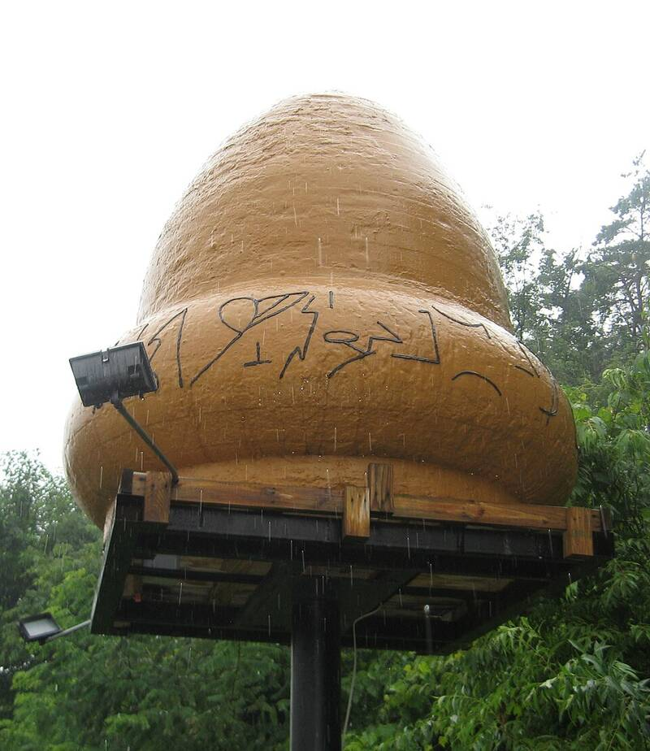

Kecksburg incident
Pennsylvania, 1965

Witnesses reported an acorn-shaped object falling into the woods and a military recovery. Official accounts point to a meteor. 1
Open in the interactive Watcher
Related
Sources
- Kecksburg UFO incident Wikipedia